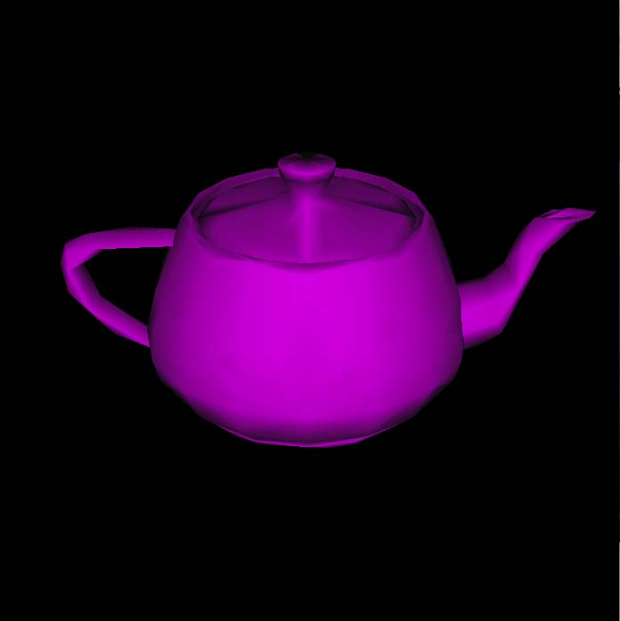

1 / 15
Uniform teapot fill smooth 0.1
2 / 15
Uniform teapot wire 0.1
3 / 15

Uniform teapot fill flat 0.1
4 / 15

Uniform teapot wire top view 0.01
5 / 15

Uniform teapot wire top zoom in 0.01
6 / 15

Uniform teapot fill smooth 0.01
7 / 15

Wolf wire rotated zoom in 0.5
8 / 15
Wolf fill smooth zoom in 0.1
9 / 15

Adaptive teapot wireframe 0.1
10 / 15

Adaptive teapot wireframe top view 0.1
11 / 15

Adaptive teapot fill smooth 0.1
12 / 15

Adaptive teapot fill flat 0.1
13 / 15

Uniform teapot hidden-line 0.1
14 / 15
Uniform teapot hidden-line rotated 0.1
15 / 15
Adaptive teapot hidden-line 0.1